![[ Table of Contents ]](../gx/indexnew.gif)
![[ Front Page ]](../gx/homenew.gif)
![[ Prev ]](../gx/back2.gif)
![[ Linux Gazette FAQ ]](./../gx/dennis/faq.gif)
![[ Next ]](../gx/fwd.gif)
"Linux Gazette...making Linux just a little more fun!"
Making Smalltalk with the Penguin
A quick tour of Smalltalk
Abstract
Since VisualWorks Non Commercial (VWNC) has been freely released for Linux,
there's been an increased interest in the Linux community about Smalltalk.
The purpose of this article is to give an introduction to Smalltalk for
Linux enthusiasts who aren't familiar with it, and to share some of the
characteristics of this language that endears itself to so many programmers.
There's lots of tutorials and references
to Smalltalk out there already. This article isn't intended to be
a tutorial or reference for OO programming or Smalltalk, but just a quick
tour to whet the palate. General OO knowledge isn't assumed, and
the article can be read standalone or while coding-along.
Much of the examples here apply equally well to all implementations
of Smalltalk. Though all implementations of Smalltalk share the same basic
characteristics, there are differences among them - especially when GUI
code comes into play. There's a number of freely available1
Smalltalk implementations available for Linux: GNU
Smalltalk, Smalltalk/X,
Squeak,
and VisualWorks
Non Commercial2. Squeak in
particular is doing some really cool stuff lately, but the examples here
are written in VWNC, since this is the flavour that I'm most familiar with.
Also, even though there's a later version available, I'm going to use VWNC
v3.0 for illustrative purposes since that is the version with the most
freely available tools/extensions available.
This article covers some background information on Smalltalk, getting
and installing VWNC3, characteristics of Smalltalk (with examples), and
further references. The characteristics of Smalltalk that are covered here
are that it:
-
is a pure OO environment, encourages OO programming
-
can save exact state of the IDE
-
is a literate language
-
is incrementally byte-compiled
-
is a portable environment; write once, run anywhere (virtual machine/ GUI)
-
can inspect and manipulate objects in real time
-
has a large degree of reflectiveness (start with running app, extensions)
-
has garbage collection, no explicit pointers
1.0 Background Information
Little known Java/Smalltalk factoid: the original Oak team wanted
to use VisualWorks Smalltalk for their purposes, but ended up inventing
Java when the licensing of VisualWorks at that time proved to be too costly
for them3.
Smalltalk has been around for quite a while, it originated at the Xerox
Palo Alto Research Center (PARC) in the early 70s, and its original intention
was to provide an environment for children to start learning how to program
in. Accordingly, its syntax is very simple and it's a very mature
environment. Smalltalk's power is rooted in its large class
library, which can be a double-edged sword. You don't have to keep
reinventing the wheel to get any work done, but on the other hand you spend
a lot of time looking for the right wheel to reuse when you're first learning
it4.
Another double-edged sword is that it's a pure OO environment, and thus
encourages people to make the paradigm shift to OO much more strongly than
other Object Based (OB) languages5
(more on this later). People who make the shift tend to become very
attached to Smalltalk and find it a very fun, productive6,
and theoretically pure environment to work in. People who don't make
the shift tend to shun it, and stay in OB languages where it's easier to
get away with writing procedural code in the guise of writing OO code.
(No Dorothy, just because you're using a C++ compiler doesn't mean that
you're writing OO code).
Though many people characterize Smalltalk as only being useful in large,
vertical
markets, Smalltalk is extremely flexible in that it is also used in
very small, horizontal markets. Smalltalk
has been used to write applications7
for large network management systems, to hospital clinical systems, to
palm pilots, to micro controllers, to embedded firmware.
But that's enough background information, let's get on with some real
examples.
2.0 Installation Stuff
VWNC3 can be obtained from a free
download site. You need to fill in your name, address, city, state,
zip, and email address to proceed. After doing this, when you click
the I Accept button, a 20,594 KByte download immediately starts,
'vw.exe'. Not the most user-friendly download mechanism in the world,
especially making a Windoze & Linux version both available in a Windoze
self-extracting archive, but it works. Download this to the parent
directory of where you want it to be, and unzip using unzip vw.exe.
The zip file will extract itself into Vwnc3. For myself, I'm running
dual-boot, so I downloaded into my /dos directory and unzipped from there
so I can also use it from Windoze, giving me a base directory of /dos/vwnc3.
(Alternatively, you can specify a VISUALWORKS environment variable with
the path).
To start it up, I like to copy the virtual machine to the image directory,
or to make a symbolic link. Since I have it installed on my dos partition,
I'll make a copy:
cp /dos/vwnc3/bin/linux86/visualnc /dos/vwnc3/image/visualnc
I noticed that the virtual machine isn't executable by default, so
let's make it that way:
chmod 555 visualnc
Then to start the image, it's necessary to tell the virtual machine
what image to run, do:
cd /dos/vwnc3/image
visualnc visualnc.im
A license reminder screen pops up every time you start VWNC, click
I
accept, and proceed through it. The window that appears on top
is called the Transcript, and the window
below it is called a Workspace. Next,
you need to inform the image where to find its needed system files.
To do this, click on File>Set VisualWorks Home from the Transcript.
In the dialog that appears, enter in the home directory: /dos/vwnc3.
The Transcript and Workspace look like:
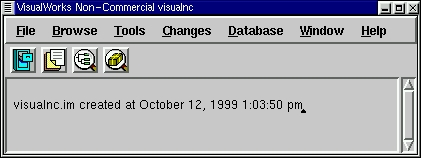
Fig. 1 - VWNC Transcript
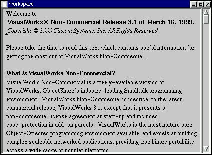
Fig. 2 - Default VWNC transcript
The startup workspace has some useful information that's worth reading,
but it isn't necessary to read it to continue through this article.
A note on mice: Smalltalk assumes that you have a three
button mouse. If this isn't the case, you can simulate a three button
mouse on a two button mouse by clicking both the left and right buttons
at the same time.
3.0 Some Notable Characteristics of
Smalltalk
3.1 Saving your work
Here's another double-edged sword: the great thing is that when you
save your IDE, everything is saved exactly in the state where
you left it. What windows you have open, where they were open, what
was highlighted, the objects that exist, everything.
A snapshot in time is taken and is saved in an image. There's no
need to reload a text file into a text editor, and find where you left
off. The other edge is that if you have a corrupted database connection
or have overwritten some objects you shouldn't have, that's also saved
with the image. So there's a need to be cognizant of the state
of your environment when saving it. Having said that though, you
can save your code separate from the image, and reload it into a clean
image if you do run into problems (a good idea to do anyway). A simple
way to save your code is in a fileout.
Lets give saving a try (might as well save the system file location
you just specified). Move your windows around until they're where you like
them, then save your image, select File>Save As... It's a good idea
to save your image as something other than the virgin image, so if you
run into problems you can always return to the clean image and reload your
code. I'll save the image as testingImage. After saving, try
closing the image File>Exit VisualWorks...>Exit. Then to restart,
be sure to pass the new image name to the virtual machine. Note,
that when you save your image, the date and time are printed on the transcript,
like so:
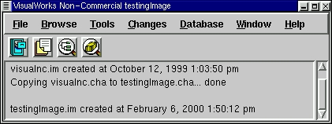
Fig. 3 - Transcript after saving as 'testingImage'
There's a lot more I could say here on saving your work (Perm Save As,
filing out, change log, Envy), but I'll digress in the interests of brevity.
3.2 Everything is an object
...this was my mantra for the first 6 months when I was learning Smalltalk.
Like most programmers back then, I had a background in procedural programming
and it was very difficult to shake that mindset. Here's where the
infamous paradigm shift comes into play. The Transcript is an object,
the menus on the transcript are objects, the buttons on the transcript
are objects, the Workspace is an object, etc. But before we get into
that, let's start with the venerable 'Hello World' example:
Ex 1: Hello World
-
Open a new workspace (click on Tools>Workspace)
-
In the workspace, type: Transcript cr. Transcript show: 'Hello
World.'
-
Congratulations, you just wrote your first Smalltalk code. Now let's
see it work:
-
Highlight that line of code, middle click and select do it (This
evaluates the Smalltalk code you just wrote)
-
You should see the 'Hello World' text be printed in the Transcript:
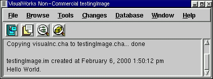
Fig. 4 - Hello World example
-
Let's examine the Smalltalk code:
| Transcript cr. |
This code gets a hold of the Transcript object, and asks it to show
a carriage return on itself. |
| Transcript show: 'Hello World.' |
Gets a hold of the Transcript object, and asks it to show 'Hello World'
on itself |
-
You can also print 'Hello World' to the command line, open a new window
and print 'Hello World' on it, or design a GUI and put 'Hello World' on
it. But again for the sake of brevity, we'll move on.
-
cr is a message to Transcript, just as show: is a message
to Transcript too. They're just messages that Transcript knows how
to respond to. They're not part of Smalltalk syntax.
-
The above point is important to remember for the non-OO programmers out
there, we send messages to objects to ask them to do something.
Realize that you just executed your first Smalltalk code without compiling.
You
didn't have to save your code, compile and link it, and then run it.
"So what, it's an interpretive language" you say. Well, not really.
To be more precise, it's an incrementally byte-compiled language.
I'll come back to this in a bit.
For now, just be aware that you're coding and executing in Smalltalk seamlessly.
Now, on to the next example:
Ex 2: Displaying current date
-
In your opened workspace, type: Date today
-
Highlight that line of code, middle click and select print it (This
evaluates the Smalltalk code you just wrote, and prints out the result.)
-
You should see the current date printed, like:
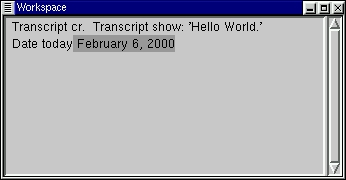
Fig. 5 - Printing Date today
| Date today |
Asks the class Date what the date today is |
-
Ok, let's get a better look at what Date today is evaluating to.
Highlight that line of code (without the date that was printed), middle
click and select inspect it. You should see:

Fig. 6 - An inspector on a date
-
This is called an inspector (This too is an object
BTW). Inspectors are objects that allow you to have a peek at objects.
If you click on self in the inspector, you'll see a textual representation
of the date:
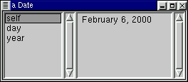
Fig. 7 - Inspector showing textual representation of the date
-
Look familiar? That's because in Fig. 5, when you printed the Date
today, you were really printing a textual representation of
the Date object. If you click on the two other attributes of this
date, you'll see that day keeps what day number it is within the
year (1->365, usually), and year keeps what year the date is for.
-
All objects have a textual representation, even if it's just the type of
object it is (though that isn't very useful).
-
The inspector is a very powerful concept. Realize that you just asked
Date for the current date, and you got a hold of a date object. You
can not only peek around this date, but you can also work with it and modify
it. For example, click on day, and enter in n+1 for what is
there. In Fig 7, Feb 6 is the 37th day of the year, so I'll enter
in 38. Then middle click, and choose accept. You'll
notice that it appears that nothing has changed. But what you've
done is to now set the object to represent the date for the n+1th day of
the year. Now, if you click back to the self on the date,
you'll see it's now showing a date for one day later than what the current
date is:
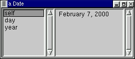
Fig. 8 - Inspector showing date after current date
So, not only can we write code and immediately execute it, but we can grab
hold of objects, and manipulate them directly with immediate effect.
These two abilities is part of what makes Smalltalk such a productive environment.
You can code-n-test in real time. If you don't understand what's going
on, you can just grab an object to see what its state is, and manipulate
it to see how it behaves. After a build, if there's a bug in testing,
you can quickly code in a fix and just load it into the testing environment
- no need to recompile.
Another thing to notice is the literateness
of Smalltalk. To get the date today we just asked Date for
today.
Though Smalltalk is a very literate language, it obviously has to break
down somewhere, for example, we can't ask Date for
tomorrow.
That being said though, the general syntax of Smalltalk is very simple
and easy to read. Keep this in mind while looking through the upcoming
code examples.
Let's move on to the third example of this section then, and get into
the paradigm shift aspect of OO:
Ex 3: Illustrating the paradigm shift
-
In your workspace, type: 1 + 2 * 3
-
Now, before you evaluate this code, think about what the answer is going
to be. You're probably thinking 7. Well, highlight the line
of code and print it
-
You'll notice the answer is 9:
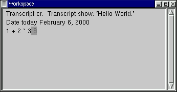
Fig. 9 - Result of message send
-
It's funny how many non-OO programmers go running in tears after I show
them this. "What! No operator precedence, what a foul language!
I'm going to stick to C++ because I can understand it!" Seriously,
I've had it happen many times.
-
However, reality depends on the blinders you're wearing; when I wrote the
answer above, I first thought of writing 9, because I was thinking in an
OO mindset, not a procedural mindset.
-
The reason this is the case, is because (repeat after me) everything
is an object. In this example, the numbers 1, 2, and 3 are all
objects. The operators: + and * are just messages that are
being sent to objects. The reasoning is that if + and * are just
messages, why should they have precedence over other types of messages?
All messages of the same type are treated equal in Smalltalk.
-
To see for yourself, highlight 1, middle click, and choose inspect.
You'll get an inspector on SmallInteger, which is the type of object that
the object 1 is.
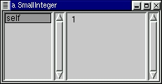
Fig. 10 - Inspecting the object 1
-
So, the code is evaluated as:
-
(the number 1) is asked to do (+) with (the number 2)
-
(the number 1) does this, answers the object: (the number 3)
-
(the number 3) is asked to do (*) with (the number 3)
-
(the number 3) does this, answers the object: (the number 9)
-
To get the code to evaluate as a procedural mindset would expect, you can
use brackets: 1 + (2 * 3)
-
"OK, why can't I highlight the date I printed, February 6, 2000,
and inspect that to see the date object?" Good question. The
simple answer is that there are certain types of objects that can be brought
into being (instantiated) by just inspecting a textual representation of
them, and there are certain types of objects that can't. Integers
are one of those types of objects that can be instantiated by inspecting
a textual representation of them.
4.0 Incremental byte compiling
As I mentioned before, Smalltalk is an incremental byte compiled environment.
Some people describe it as being a cross between compiled and interpretive
languages. What happens when you do or print something, is:
-
the Smalltalk compiler translates the Smalltalk code into byte codes
-
the byte codes are passed to the virtual machine for execution
-
the byte codes are executed, and the result is returned
Well, this sounds rather interpretive, doesn't it? The difference
is that what we've been doing so far isn't normal Smalltalk programming.
Recall that Workspaces are just a temporary sandbox. Normally, when
you're programming, you accept Smalltalk code (save it in the image), and
the code stays byte-compiled. Normally, when you're programming,
you accept Smalltalk code in methods for a class,
and:
-
the Smalltalk compiler translates the Smalltalk code into byte codes
-
the byte codes are kept with that class
-
when a message is sent to a class, the appropriate byte codes for the method
are sent to the virtual machine for execution
-
the byte codes are executed, and the result is returned
The net result is that every time you make a change to your classes, that
small change is semantically checked, is compiled, and takes
effect immediately. It's pretty cool to make a tiny change, then
see it immediately reflected in your program's behaviour.
Java is similar in the respect that it is byte compiled, but different
in the respect that it isn't incrementally byte compiled.
So when Java programming, you need to recompile all of it (or parts of
it if you're using make), and relink all of it every time you want a change
to take effect.
5.0 Virtual Machine/Portability
The virtual machine is just what it sounds like - a virtual computer that
knows how to execute Smalltalk bytecodes. The virtual machine is
usually implemented in C (squeak is the notable exception to this, even
its virtual machine is implemented in Smalltalk - then exported to C programmatically).
It's the virtual machine that allows for such portability across different
machine types. Smalltalk has had the write once, run everywhere paradigm
for decades! To give you a quick taste of this, select File>Settings.
In the Dialog that pops up, select the Look Selection of Macintosh,
then
select Accept.
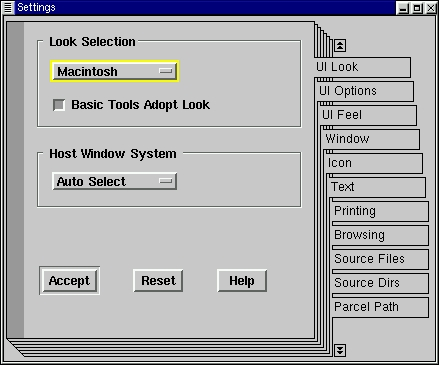
Fig. 11- Selecting a Mac look-n-feel
Now you'll notice that your entire system is running with a Mac look-n-feel!
The first time I saw this back in '95, it blew me out of my chair.
I had just spent a year doing a very painful port of OpenWindows
to Motif for parts of a C based application. Then, here somebody
showed me how they could 'port' their application from SunOS to Solaris
to MacOS with a click of a button!
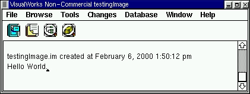
Fig. 12 - Transcript with Mac look-n-feel
Keep in mind that the above window is running on a Linux box! I commonly
use this feature at work when my employer is developing in Windoze, because
I prefer the Motif look-n-feel.
6.0 Reflectiveness
Here's where I think the real power of Smalltalk comes to play: in
its reflectiveness. In Smalltalk, 98% of
Smalltalk is written in Smalltalk, which makes it easy to customize, enhance,
or tweak the environment. (Squeak is the notable exception here,
100% of it is written in Smalltalk). So it's very easy to see how
Smalltalk is written, and to extend it for your needs. In fact, this
is the whole basis of development in Smalltalk. You start with
a running application, you add business-specific extensions to it,
strip out the parts you don't need, and then deliver the running application.
Here's a simple example to show how to extend Smalltalk:
Ex 4: Adding inspect menus to all windows
-
Remember when I said that the Transcript and default workspace were objects?
We should be able to inspect them then right? Right. However,
it's not that easy in the environment as it comes to grab hold of an arbitrary
window to inspect it. We're going to add a simple extension that
allows for this.
-
Open a class browser Browse>All Classes
-
You now see what is called the class browser, or System Browser.
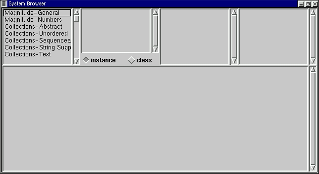
Fig. 13 - Empty class browser
-
Going through the panes from left to right, top to bottom, you see: categories,
classes,
protocols,
methods,
and method code. Additionally, you'll see two radio buttons: one
sets the browser to look at the instance side of a class, the other sets
the browser to look at the class side. (We're going to do one instance
method and one class method.)
-
Middle click on the category pane, and select Find Class..., then
enter StandardSystemController in the dialog that pops up
-
After the browser highlights the StandardSystemController class,
click on the menu messages protocol in the protocol pane, and on
the back method in the method pane. You should now see:
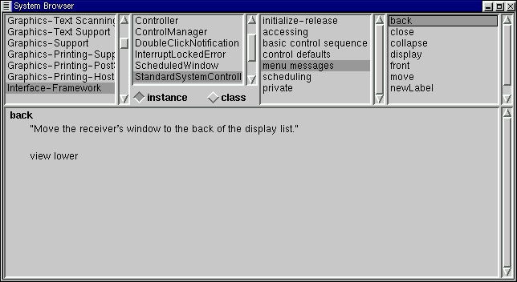
Fig. 14 - Class browser with method selected.
-
Briefly, categories are groups of classes, we have the Interface-Framework
category selected. We also have the StandardSystemController
class selected. Protocols are groups of methods, and we currently
have the
menu messages protocol selected. Methods are where
the code is implemented, and we have the back method selected.
-
We're going to add a method to the menu messages protocol. To do
this, just highlight all of the current method and delete it. Don't
worry, the method isn't gone and won't be deleted by doing this.
It's just an easy way to create a new method in the currently selected
protocol.
-
Then type in the text:
inspectView
self view model inspect.
-
Then to save the method, middle click and choose accept.
-
You'll notice that the method you just entered is now showing in the browser.
It's already been compiled and is ready to be executed. You should
see:
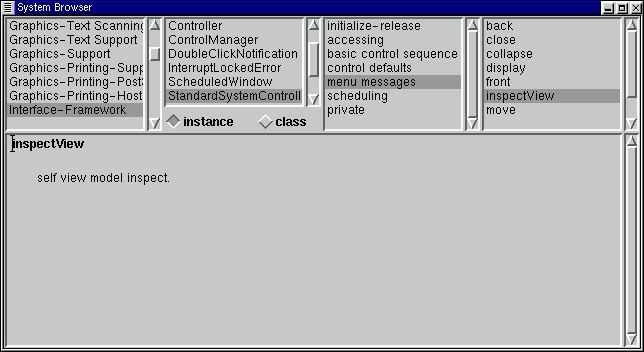
Fig. 15 - Added inspectView method
-
Next, we need to add a class side method. Click on the class
radio button in the class browser.
-
Then click on the class initialization protocol, and on the flushMenus
method.
-
Just as before, delete all of the text for the method, (the flushMenus
method won't be deleted), and type:
initializeForAdditions
"Initialize the menu."
"self initializeForAdditions"
ScheduledBlueButtonMenu :=
Menu
labels: 'relabel as...\refresh\move\resize\front\back\collapse\close\inspect'
withCRs
lines: #(1 7 8)
values: #( #newLabel #display #move #resize #front
#back #collapse #close #inspectView).
-
After you're done typing this, middle click and accept the method.
Now you should see:
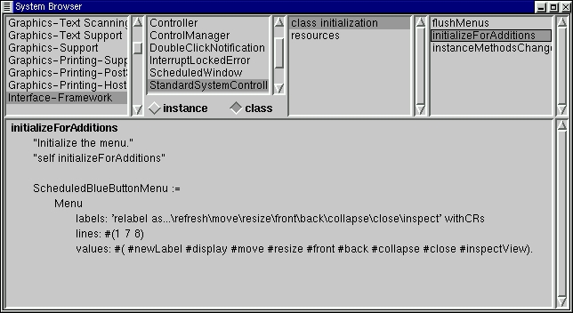
Fig. 16 - Added initializeForAdditions method
-
OK, now comes the neat part. Right click over the method code pane,
you should see the window menu:
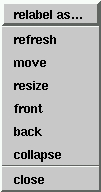
-
At this point, the code has been byte-compiled. But, since it's initialization
code, it hasn't been run yet. We can run this code right from the
browser; just highlight the self initializeForAdditions text, middle
click, and do it.
-
Now that the code has been run, you should see inspect added to
the bottom of the window menu:
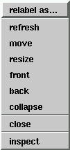
-
Now we can inspect any window that has this menu window defined on it.
Try it out by inspecting this class browser we've been using. Just
right click, and choose inspect. You'll see an inspector on
the class browser, selecting the className attribute, you'll see
the class there matches the current class selected:
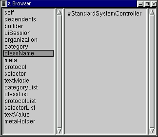
Note: What we just did here was a base image extension. This is a
type of coding change that should be done and tracked carefully.
7.0 Garbage Collection
Yea, though I walk through the valley of doomed schedules, I shall fear
no deallocating...
Garbage collection: AKA the sanity saver. Smalltalk has garbage
collection, which means objects that are no longer referenced are cleaned
up to free up memory. I remember pulling out my hair many a time
when programming in C++ trying to find memory leaks. This is because
in C++ it's up to the developer to manage your memory. If you didn't
deallocate the memory you're using, your application would continually
take up more memory until your machine ran out of memory and crashed.
Speaking of machines crashing, you'll note that we never had to do any
pointer manipulation. This is because Smalltalk has no pointers.
(Well, this is technically incorrect. Every variable reference is
actually a pointer to an object, it's just that in Smalltalk the developer
is relieved of the burden of manually maintaining pointers).
8.0 Summary
I hope that I've been able to give a concise, meaningful tour of Smalltalk
that has been approachable by non OO programmers. I've shown that
Smalltalk:
-
is a pure OO environment, encourages OO programming
-
can save exact state of the IDE
-
is a literate language
-
is incrementally byte-compiled
-
is a portable environment; write once, run anywhere (virtual machine/ GUI)
-
can inspect and manipulate objects in real time
-
has a large degree of reflectiveness (start with running app, extensions)
-
has garbage collection, no explicit pointers
There's lots of other cool things I would liked to have touched upon in
this article, but space constraints just don't allow for them:
-
the online help
-
debugger
-
numbers - (try printing 100000 factorial in a workspace (if you
have the time for crunching - number size is only limited by your memory),
or try inspecting 12/7)
-
parcels - a code sharing mechanism
-
Refactoring Browser - my favourite programming tool
-
HotDraw - a reusable draing framework
-
testing frameworks - automate your testing
-
dynamic changing of widgets at runtime
Glossary
| Category |
A group of classes |
| Class |
A type of an object |
| Horizontal market |
A market that tends to have a very large audience and has a very small
impact on that audience. Shinkwrapped software addresses a horizontal
market. For example, a word processing package - if it crashes, just reload
your last saved snapshot. |
| Inspector |
A GUI type of object that allows you to look at and work with objects. |
| Literateness |
A simple definition of literateness is how readible/simple the syntax
of a language is. Literate programming is programming for readability
for the programmer who comes after you. |
| Method |
A piece of Smalltalk code for an object. |
| Object |
A grouping of related data and operations. It exhibits behaviour
through its operations on its data. |
| Protocol |
A group of methods. |
| Reflectiveness |
How much of an environment can be manipulated within itself.
In Smalltalk, 98% of Smalltalk is written in Smalltalk, which makes it
easy to customize, enhance, or tweak the environment. (Squeak is
the notable exception here, 100% of it is written in Smalltalk). |
| Transcript |
The main window of the IDE, where other windows (browsers, workspaces,
etc) are opened from. Also keeps a running list of system messages. |
| Workspace |
A scratchpad where developers can experiment with code. |
| Vertical market |
A market that tends to have a very small audience and has a very large
impact on that audience. For example, a network management system
for a telecommunications company - if it crashes the company loses a million
dollars a minute. |
Further References
-
A history of
Smalltalk
-
A brief history
of Smalltalk
-
GoodStart
-
WikiWikis:
-
Smalltalk
-
Squeak
-
VisualWorks
-
Newsgroup: comp.lang.smalltalk
-
Free Smalltalk archives:
-
Smalltalk (UIUC - the granddaddy
of Smalltalk archives)
-
Squeak
-
VSE (in
German)
-
Tutorials:
-
Squeak
-
VisualWorks
-
Lots 'o Smalltalk Links
-
Dave's Smalltalk FAQ (There's
a number of ones out there, but even though it's dated, this is the best
IMHO. Dave - it'd be great if you ever got time to finish this.)
-
eXtreme Programming
(Which originated in a Smalltalk project)
Footnotes
-
Every implementation has different license restrictions. To my knowledge,
only GNU Smalltalk and Squeak have GNU copyleft types of licenses.
-
The last two implementations are the newer ones.
-
In article:
http://x37.deja.com/getdoc.xp?AN=564595555&CONTEXT=949863157.89849870&hitnum=0
Author:
Eric Clayberg
<clayberg@instantiations.com>
Patrick Logan <patrick@c837917-a.potlnd1.or.home.com>
wrote in message
news:hTN84.453$HT1.6388@news.rdc1.wa.home.com...
>
> I wish the original Oak team had chosen to adopt Smalltalk
> rather than invent Java
They tried to, but ParcPlace wanted too much on a per-copy royalty
basis...sigh
-
Bah! Real programmers reinvent the wheel all the time, it puts hair
on your chest! ...sigh, I've run into that far too many times over
the years. More often than not, the wheels that are reinvented tend
to be rather square. Too bad that schools often encourage this mentality
during formal training. [End soapbox]
-
This is some loose terminology that shifts depending on who you're speaking
with. For my purposes, an Object based (OB) language is a non-OO
language that has been evolved towards Object-orientedness. (C++,
OO-COBAL, etc). Some people call these bastardized OO languages.
-
Some productivity numbers from Software
Productivity Research. (A sample of ave. source statements/function
point: Smalltalk: 21, C: 128, C++: 53, Visual Basic 5: 29)
-
GoodStart - who's using
Smalltalk - http://www.goodstart.com/whoswho.html
Copyright © 2000, Jason Steffler
Published in Issue 51 of Linux Gazette, March 2000
Talkbacks